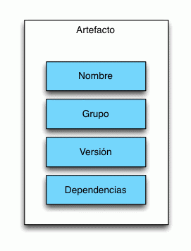

Flisol 2016

JAVA JDBC mis primeros pasos
Presenta: Julio Martínez Andrade / @bl4ck0is1s
¿Que es JDBC?
JDBC es Acrónimo de Java DataBAse Conectivy, es una API estándar de Java que nos permite el acceso a bases de datos relacionales embebidas o empotradas como: firebird, SQLite, HSQLDB, etc.
Cada servidor de base de datos tiene un driver JDBC que cuenta con las interfaces especificadas en JDBC ; es decir, cada manejador de base de datos tiene un driver especifico que generalmente viene en un archivo JAR y este es en la mayoría de los casos suministrado por terceros.
JDBC API
Como se menciono anteriormente JDBC es una api, que encontramos en el paquete de java: java.sql, el cual contiene algunos objetos y métodos como:
DiverManager, Conecction, ResultSet, DatabaseMetaData, ResultSetMetaData, PreparedStatement, CallableStatement, etc.
Otras funciones de JDBC Avanzado las podemos encontrar en javax.sql, por ejemplo:
- DataSource para realizar un pool de conexiones.
DiverManager
DriverManager es una clase estática de Java™ 2 Plaform, DriverManager gestiona el conjunto de controladores Java Database Connectivity (JDBC) que están disponibles para que los utilice una aplicación.
try{
conn = DriverManager.getConnection(url);
}
catch (SQLException e){
logger.error( "Error de conexion con la base de datos" );
logger.error("ERROR: " + e.getMessage());
e.printStackTrace();
return;
}
URL de la base de datos
La URL o Dirección de la base de datos es una cadena de texto que nos ayuda a conectarnos directamente a la base de datos, las URL´s deben de tener los siguientes datos: nombre de servidor, puerto, nombre de usuario, contraseña por ejemplo:
URL Mysql: jdbc:mysql://servidor:puerto/NombreDeBaseDeDatos,usuario,contraseña
- jdbc:mysql://localhost/flisol","root",""
Creando una conexión JDBC
Ahora que ya conocemos los conceptos básicos de JDBC a manera de ejemplo crearemos una clase que nos permita realizar una conexión y ejecutar consultas, donde se explicaran los objetos implicados, métodos y excepciones.
Pero antes...
¿Que es Maven?

Segun la Wikipedia...
Maven es una herramienta de software para la gestión y construcción de proyectos Java creada por Jason van Zyl, de Sonatype, en 2002. Es similar en funcionalidad a Apache Ant (y en menor medida a PEAR de PHP y CPAN de Perl), pero tiene un modelo de configuración de construcción más simple, basado en un formato XML. Estuvo integrado inicialmente dentro del proyecto Jakarta pero ahora ya es un proyecto de nivel superior de la Apache Software Foundation.
Maven y Artefactos
Maven solventa esta problema a traves del concepto de Artefacto. Un Artefacto puede verse como una librería con esteroides (aunque agrupa mas conceptos). Contiene las clases propias de la librería pero ademas incluye toda la información necesaria para su correcta gestión (grupo, versión, dependencias etc).

Artefactos y POM
Para definir un Artefacto necesitamos crear un fichero POM.xml (Proyect Object Model) que es el encargado de almacenar toda la información que hemos comentado anteriormente:
4.0.0
com.mx.flisol
jdbcjava
1.0.0-SNAPSHOT
jar
log4j
log4j
1.2.17